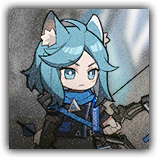

“青金”，莫妮克 Monique the Lazurite
远程 物理；精英 类人（库兰塔）

|
 |
“青金”，莫妮克。无胄盟青金大位，第三小队组长。她曾是维多利亚军中一名天赋异禀的士兵，却因平民出身而始终无法晋升，最终辗转成为无胄盟的顶尖弓手，为卡西米尔总商会执行无数暗杀。 严谨刺客。莫妮克是位一丝不苟的领队。她最厌恶那些半途搅局之人——扰乱她计划的家伙，都会被优先划入靶心。 |
"记下了。目标，扰乱计划者——优先清除。 "
“青金”，莫妮克丨Monique, the Lazurite
中型类人（库兰塔；无胄盟），守序中立
| AC 20 | 先攻 +11（21） |
| HP 218（26d8+104） | |
| 速度 40 尺 | |
| 调整 | 豁免 | 调整 | 豁免 | 调整 | 豁免 | |||||||||
|---|---|---|---|---|---|---|---|---|---|---|---|---|---|---|
| 力量 | 13 | +1 | +1 | 敏捷 | 24 | +7 | +12 | 体质 | 18 | +4 | +9 | |||
| 智力 | 16 | +3 | +8 | 感知 | 17 | +3 | +8 | 魅力 | 12 | +1 | +1 |
| 技能 隐匿+12，察觉+8，调查+8，威吓+6 |
| 感官 黑暗视觉120尺，被动察觉18 |
| 语言 通用语，卡西米尔语，维多利亚语 |
| CR 16（XP 15,000；PB+5） |
特质 Traits
追命重箭 Adamantine Arrow。莫妮克的远程攻击在命中物件时视为造成重击。她可以正常对穿着精金护甲的生物造成重击。
无胄袭杀 Armour Killer。莫妮克对穿着中甲或重甲的目标发动的攻击具有优势。
暗箭难防 Insidious Arrow。莫妮克的远程攻击忽略半身掩护和四分之三掩护。任何生物无法针对莫妮克发动的远程攻击而采取反应。
反射闪避 Evasion。当莫妮克受到一个允许其进行敏捷豁免以只承受一半伤害的效应影响时，其豁免成功时不受伤害，豁免失败时只承受一半伤害。她无法在失能期间使用此特质。
动作 Actions
多重攻击 Multiattack。莫妮克使用长弓发动三次攻击。
长弓 Longbow。远程攻击检定：+14，射程150/600尺。命中：15（2d8+6）穿刺伤害，外加22（5d8）寒冷伤害。
重矢：寒芒刺背 Piercing Frost。莫妮克蓄力并朝两个不同的目标各射出一支重矢。敏捷豁免检定：DC19（着中甲或重甲的目标此豁免具有劣势），莫妮克150尺内至多两名其可见的生物。失败：55（10d10）穿刺伤害外加22（5d8）寒冷伤害，且移动速度减少10尺直到莫妮克下回合结束。成功：仅受半伤。失败或成功：此动作不可再使用，直到莫妮克执行过一次多重攻击。
附赠动作 Bonus Actions
破甲侵蚀 Piercing Corrosion。体质豁免检定：DC16，每名本回合受到过莫妮克的寒冷伤害的生物。失败：18（4d8）寒冷伤害，且目标的AC获得-2减值，持续1分钟，可以叠加。
反应 Reactions
肃清搅局 No Interference。触发：莫妮克或莫妮克60尺内一个友方无胄盟生物被攻击命中。响应：莫妮克可以对攻击来源发动一次长弓攻击。